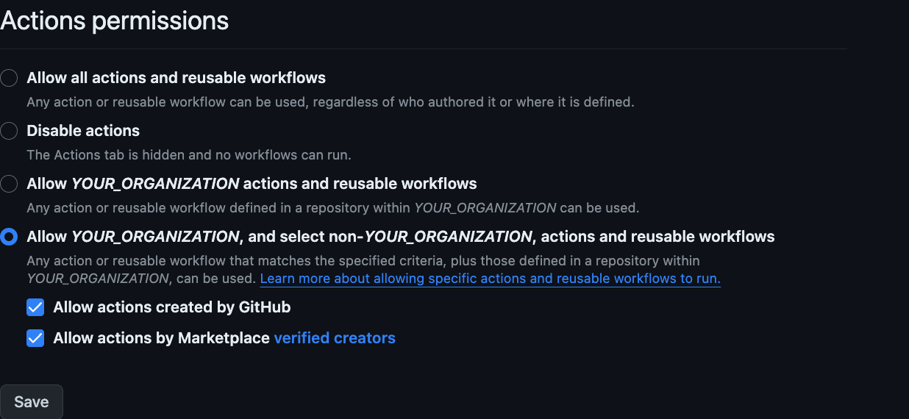

ssh-agent with Windows runners
Note that if you do not plan to use Windows runners, it is not worth reading at all thereafter.
Clone another private repository
While running a job in GitHub Actions for repository A, we want to create the steps to check out or clone another private repository B that is different from A. An easy way, not limited to Windows runners, would be to use the marketplace actions/checkout as follows:
steps:
- name: Checkout private repository
uses: actions/checkout@v4
with:
repository: maroontress-tomohisa/private-repository-example
ssh-key: ${{secrets.PRIVATE_REPO_DEPLOY_KEY}}
path: private-repository-example
- name: Print README.md
shell: bash
run: |
cat private-repository-example/README.md
We shall use the deploy key to access repository B. Let the
URL of repository B be
git@github.com:maroontress-tomohisa/private-repository-example.git. Then
assume that we have configured repository B properly with the public key of the
deploy key and that we have configured repository A properly with the private
key of the deploy key in the secrets of repository A, which can be
referenced by secret.PRIVATE_REPO_DEPLOY_KEY in the workflow.
The first step is to check out repository B to private-repository-example. The
next step is to output the contents of README.md in repository B for check.
The result is as follows:
Run actions/checkout@v4
Syncing repository: maroontress-tomohisa/private-repository-example
Getting Git version info
Temporarily overriding HOME='D:\a\_temp\d3f120f5-cde6-43a2-b847-7146107be8b8' before making global git config changes
Adding repository directory to the temporary git global config as a safe directory
"C:\Program Files\Git\bin\git.exe" config --global --add safe.directory D:\a\try_out_github_actions\try_out_github_actions\private-repository-example
Initializing the repository
Disabling automatic garbage collection
Setting up auth
Determining the default branch
Fetching the repository
Determining the checkout info
Checking out the ref
"C:\Program Files\Git\bin\git.exe" log -1 --format='%H'
'3cf9492e7ffb20ea5246a8edf1bec8d3aab293a4'
⋮
# An Example of Private Repository
{kind=link}
It succeeded. The last line is the exact content of README.md.
Thus, we can use actions/checkout to check out another private repository. However, if you need to check out repository B in the same way in your local environment, you want to prepare some script and check it out with that script. Then, what you describe in the workflow file can only be executed in GitHub Actions, so you have to manage them twice. It may be a better idea to create something that converts the workflow file so that you can run it locally, but let's look into other ways to do this.
Clone another private repository with ssh-agent
We try the same thing, this time using ssh-agent. You can do it by adding an
entry to ~/.ssh/config instead, but we will attempt that in a later section.
First, check how the ssh-agent related commands are installed on the Windows
runner:
- name: Check commands
shell: bash
run: |
ls -l `which ssh`
ls -l `which ssh-add`
ls -l `which ssh-agent`
ls -l `which git`
The result is as follows:
-rwxr-xr-x 1 runneradmin 197121 958822 Aug 30 09:46 /usr/bin/ssh
-rwxr-xr-x 1 runneradmin 197121 441485 Aug 30 09:46 /usr/bin/ssh-add
-rwxr-xr-x 1 runneradmin 197121 415546 Aug 30 09:46 /usr/bin/ssh-agent
-rwxr-xr-x 4 runneradmin 197121 3830264 Aug 30 09:49 /mingw64/bin/git
{kind=link}
There are several implementations of ssh-agent on Windows, but the one in the
PATH is from Git for Windows.
Running ssh-agent as usual will result in the following:
- name: Start ssh-agent
shell: bash
run: |
eval `ssh-agent`
echo SSH_AUTH_SOCK="$SSH_AUTH_SOCK" >> "$GITHUB_ENV"
echo SSH_AGENT_PID="$SSH_AGENT_PID" >> "$GITHUB_ENV"
eval `ssh-agent` sets the environment variables
SSH_AUTH_SOCK and SSH_AGENT_PID. The last two lines append these variables
to $GITHUB_ENV to enable them in subsequent steps (see Setting Environment
Variables for details).
The result is as follows:
Agent pid 433
{kind=link}
Since ssh-agent is now running in the background, the next step is to add the
deploy key to the agent with the ssh-add command:
- name: Add a deploy key
shell: bash
run: |
mkdir -p $HOME/.ssh
echo "${{secrets.PRIVATE_REPO_DEPLOY_KEY}}" > $HOME/.ssh/PRIVATE_REPO_DEPLOY_KEY
ssh-add $HOME/.ssh/PRIVATE_REPO_DEPLOY_KEY
The first two lines create the ~/.ssh directory and save the private key there
as a file.
The result is as follows:
Identity added: /c/Users/runneradmin/.ssh/PRIVATE_REPO_DEPLOY_KEY (git@github.com:maroontress-tomohisa/private-repository-example.git)
{kind=link}
We added it successfully. The comment on the SSH key is in parentheses. Although we created this deploy key using the repository URL in the comment, it is currently not usable. So we will ignore it for now and use it in a later section to access multiple private repositories.
To be sure, check the added key with ssh-add -l as follows:
- name: List fingerprints
shell: bash
run: |
ssh-add -l
The result is as follows:
3072 SHA256:EHYsJhMvV2X03sbEYcAH3w7MNft1lra8M/ZSF0XMr5k git@github.com:maroontress-tomohisa/private-repository-example.git (RSA)
{kind=link}
Usually, you should now be able to run git clone. Let's clone it as follows:
- name: Clone the private repository (which fails)
continue-on-error: true
shell: bash
run: |
git clone --depth 1 git@github.com:maroontress-tomohisa/private-repository-example.git
cat private-repository-example/README.md
The last line intends to show README.md if the clone succeeds, but it is
meaningless because the cloning fails. The result is as follows:
Cloning into 'private-repository-example'...
Host key verification failed.
fatal: Could not read from remote repository.
Please make sure you have the correct access rights
and the repository exists.
Error: Process completed with exit code 128.
{kind=link}
The reason for this error is simple: the SSH public key for github.com is not
in ~/.ssh/known_hosts. No, in the first place, ~/.ssh/known_hosts does not
exist. Let's create known_hosts as follows:
- name: Perform workarounds (create ~/.ssh/known_hosts)
shell: bash
run: |
rm -rf private-repository-example
cat << EOF > $HOME/.ssh/known_hosts
github.com ssh-rsa AAAAB3NzaC1yc2EAAAADAQABAAABgQCj7ndNxQowgcQnjshcLrqPEiiphnt+VTTvDP6mHBL9j1aNUkY4Ue1gvwnGLVlOhGeYrnZaMgRK6+PKCUXaDbC7qtbW8gIkhL7aGCsOr/C56SJMy/BCZfxd1nWzAOxSDPgVsmerOBYfNqltV9/hWCqBywINIR+5dIg6JTJ72pcEpEjcYgXkE2YEFXV1JHnsKgbLWNlhScqb2UmyRkQyytRLtL+38TGxkxCflmO+5Z8CSSNY7GidjMIZ7Q4zMjA2n1nGrlTDkzwDCsw+wqFPGQA179cnfGWOWRVruj16z6XyvxvjJwbz0wQZ75XK5tKSb7FNyeIEs4TT4jk+S4dhPeAUC5y+bDYirYgM4GC7uEnztnZyaVWQ7B381AK4Qdrwt51ZqExKbQpTUNn+EjqoTwvqNj4kqx5QUCI0ThS/YkOxJCXmPUWZbhjpCg56i+2aB6CmK2JGhn57K5mj0MNdBXA4/WnwH6XoPWJzK5Nyu2zB3nAZp+S5hpQs+p1vN1/wsjk=
EOF
And then clone it again as follows:
- name: Clone a private repository
shell: bash
run: |
git clone --depth 1 git@github.com:maroontress-tomohisa/private-repository-example.git
cat private-repository-example/README.md
The result is as follows:
Cloning into 'private-repository-example'...
# An Example of Private Repository
{kind=link}
The clone is successful.
☕
Until recently, it was necessary to set the environment variable
GIT_SSHat this stage, but now it is no longer necessary. The world of GitHub Actions seems to be getting a little better.
Clone another private LFS repository
Now we clone another private repository C. However, repository C uses Git LFS. Yes, although there was no description, repository B in the previous section did not use LFS.
Let the URL of repository C be
git@github.com:maroontress-tomohisa/private-lfs-repository-example.git. Then,
as well as repository B, assume that we have configured repository C properly
with the public key of the deploy key and that we have configured repository A
properly with the private key of the deploy key in the secrets of repository A,
which can be referenced by secret.PRIVATE_LFS_REPO_DEPLOY_KEY in the workflow.
At first glance, it looks like it could be done the same way as in the previous section, only changing the URL and secret variables. Run the steps as follows:
steps:
- name: Start ssh-agent
shell: bash
run: |
mkdir -p $HOME/.ssh
cat << EOF > $HOME/.ssh/known_hosts
github.com ssh-rsa AAAAB3NzaC1yc2EAAAADAQABAAABgQCj7ndNxQowgcQnjshcLrqPEiiphnt+VTTvDP6mHBL9j1aNUkY4Ue1gvwnGLVlOhGeYrnZaMgRK6+PKCUXaDbC7qtbW8gIkhL7aGCsOr/C56SJMy/BCZfxd1nWzAOxSDPgVsmerOBYfNqltV9/hWCqBywINIR+5dIg6JTJ72pcEpEjcYgXkE2YEFXV1JHnsKgbLWNlhScqb2UmyRkQyytRLtL+38TGxkxCflmO+5Z8CSSNY7GidjMIZ7Q4zMjA2n1nGrlTDkzwDCsw+wqFPGQA179cnfGWOWRVruj16z6XyvxvjJwbz0wQZ75XK5tKSb7FNyeIEs4TT4jk+S4dhPeAUC5y+bDYirYgM4GC7uEnztnZyaVWQ7B381AK4Qdrwt51ZqExKbQpTUNn+EjqoTwvqNj4kqx5QUCI0ThS/YkOxJCXmPUWZbhjpCg56i+2aB6CmK2JGhn57K5mj0MNdBXA4/WnwH6XoPWJzK5Nyu2zB3nAZp+S5hpQs+p1vN1/wsjk=
EOF
eval `ssh-agent`
echo SSH_AUTH_SOCK="$SSH_AUTH_SOCK" >> "$GITHUB_ENV"
echo SSH_AGENT_PID="$SSH_AGENT_PID" >> "$GITHUB_ENV"
- name: Add a deploy key
shell: bash
run: |
echo "${{secrets.PRIVATE_LFS_REPO_DEPLOY_KEY}}" > $HOME/.ssh/PRIVATE_LFS_REPO_DEPLOY_KEY
ssh-add $HOME/.ssh/PRIVATE_LFS_REPO_DEPLOY_KEY
- name: List fingerprints
shell: bash
run: |
ssh-add -l
- name: Clone a private repository with LFS
shell: bash
run: |
git clone --depth 1 git@github.com:maroontress-tomohisa/private-lfs-repository-example.git
cat private-lfs-repository-example/README.md
unzip -v private-lfs-repository-example/empty.zip
The root of private repository C contains empty.zip. If the last line of
output is OK, the clone is successful. The result is as follows:
Agent pid 56
⋮
Identity added: /c/Users/runneradmin/.ssh/PRIVATE_LFS_REPO_DEPLOY_KEY (git@github.com:maroontress-tomohisa/private-lfs-repository-example.git)
⋮
3072 SHA256:61EFfTJR56r9rX3u9EGG/HrvPcejWJTR0VLssfIpBzg git@github.com:maroontress-tomohisa/private-lfs-repository-example.git (RSA)
⋮
Cloning into 'private-lfs-repository-example'...
# An Example of Private Repository with LFS
Archive: private-lfs-repository-example/empty.zip
Length Method Size Cmpr Date Time CRC-32 Name
-------- ------ ------- ---- ---------- ----- -------- ----
0 Stored 0 0% 2023-10-06 06:44 00000000 empty
-------- ------- --- -------
0 0 0% 1 file
{kind=link}
The clone is successful.
☕
Until recently, it was also necessary to set the environment variable
GIT_SSHat this stage, but now it is no longer necessary.
Note that if you use actions/checkout, you need to add the option lfs: true as
follows:
steps:
- name: Checkout private LFS repository
uses: actions/checkout@v4
with:
repository: maroontress-tomohisa/private-lfs-repository-example
ssh-key: ${{secrets.PRIVATE_LFS_REPO_DEPLOY_KEY}}
lfs: true
path: private-lfs-repository-example
{kind=link}
Clone multiple private repositories
Next, we want to access the two repositories B and C, during the job of
repository A. If we use actions/checkout, we can just put the two steps
together, but can we do this with ssh-agent?
It is possible to add multiple keys to ssh-agent with ssh-add. However,
ssh will only apply keys to the connection one at a time in order, such as
“if a connection fails, try the next key” and so on.
The following is a quoted description of webfactory/ssh-agent in the marketplace:
There's one caveat, though: SSH servers may abort the connection attempt after a number of mismatching keys have been presented. So if, for example, you have six different keys loaded into the ssh-agent, but the server aborts after five unknown keys, the last key (which might be the right one) will never even be tried.
So, if you use ssh-agent to check out multiple repositories, you need to
repeat “add deploy key, check out, remove deploy key” as follows:
- Add the key of repository B with
ssh-add - Clone repository B
- Remove the key of repository B with
ssh-add -d - Add the key of repository C with
ssh-add - Clone repository C
- Remove the key of repository C with
ssh-add -d - ⋮
By the way, it would be common to be able to clone two repositories without
using deploy keys when building in a local environment. Since we want to check
out repositories even in a workflow file using the same procedure as in the
local environment, let's stop using ssh-agent and try another method.
Since repositories B and C are on the same host github.com, this requires a
bit more effort (this is a common story, not limited to GitHub Actions, so
please ask ChatGPT or someone for details). To summarize, it is a technique that
uses the url.<base>.instantOf function in git config
and the Host and Hostname functions in ~/.ssh/config,
assigns a unique fake hostname to each repository in the Git layer, converts
the fake hostname to github.com in the SSH layer, and associates the fake host
with the SSH key of the corresponding repository as follows:
steps:
- name: Create ~/.ssh/known_hosts
shell: bash
run: |
mkdir -p $HOME/.ssh
cat << EOF > $HOME/.ssh/known_hosts
github.com ssh-rsa AAAAB3NzaC1yc2EAAAADAQABAAABgQCj7ndNxQowgcQnjshcLrqPEiiphnt+VTTvDP6mHBL9j1aNUkY4Ue1gvwnGLVlOhGeYrnZaMgRK6+PKCUXaDbC7qtbW8gIkhL7aGCsOr/C56SJMy/BCZfxd1nWzAOxSDPgVsmerOBYfNqltV9/hWCqBywINIR+5dIg6JTJ72pcEpEjcYgXkE2YEFXV1JHnsKgbLWNlhScqb2UmyRkQyytRLtL+38TGxkxCflmO+5Z8CSSNY7GidjMIZ7Q4zMjA2n1nGrlTDkzwDCsw+wqFPGQA179cnfGWOWRVruj16z6XyvxvjJwbz0wQZ75XK5tKSb7FNyeIEs4TT4jk+S4dhPeAUC5y+bDYirYgM4GC7uEnztnZyaVWQ7B381AK4Qdrwt51ZqExKbQpTUNn+EjqoTwvqNj4kqx5QUCI0ThS/YkOxJCXmPUWZbhjpCg56i+2aB6CmK2JGhn57K5mj0MNdBXA4/WnwH6XoPWJzK5Nyu2zB3nAZp+S5hpQs+p1vN1/wsjk=
EOF
- name: Add deploy keys
shell: bash
run: |
add_key() {
key="$HOME/.ssh/$1"
win_key="$(cygpath -w $key)"
echo "$2" > "$key"
ssh-keygen -y -f $key > $key.pub
read a b comment < $key.pub
echo comment: $comment
url="${comment%.*}"
echo url: $url
host_path="${url#*@}"
new_host_path="$1.${host_path}"
new_url="git@$new_host_path"
echo git config --global url."${new_url}".insteadOf "${url}"
git config --global url."${new_url}".insteadOf "${url}"
cat << EOF >> $HOME/.ssh/config
Host ${new_host_path%%:*}
HostName github.com
IdentityFile $win_key
IdentitiesOnly yes
EOF
}
add_key PRIVATE_REPO_DEPLOY_KEY "${{secrets.PRIVATE_REPO_DEPLOY_KEY}}"
add_key PRIVATE_LFS_REPO_DEPLOY_KEY "${{secrets.PRIVATE_LFS_REPO_DEPLOY_KEY}}"
- name: Print git config
shell: bash
run: git config --global --list
- name: Print ssh config
shell: bash
run: cat $HOME/.ssh/config
- name: Clone a private repository
shell: bash
run: |
git clone --depth 1 git@github.com:maroontress-tomohisa/private-repository-example.git
cat private-repository-example/README.md
- name: Clone another private repository with LFS
shell: bash
run: |
git clone --depth 1 git@github.com:maroontress-tomohisa/private-lfs-repository-example.git
cat private-lfs-repository-example/README.md
unzip -v private-lfs-repository-example/empty.zip
It's a bit long, but not too difficult. In the Add deploy keys step, change
the configuration with git config and create entries in ~/.ssh/config for
each deploy key. We use the SSH key's comment mentioned in the previous section
here. By embedding the URL to the key as a comment, we do not need to specify
the key and URL pair. The result is as follows:
comment: git@github.com:maroontress-tomohisa/private-repository-example.git
url: git@github.com:maroontress-tomohisa/private-repository-example
git config --global url.git@PRIVATE_REPO_DEPLOY_KEY.github.com:maroontress-tomohisa/private-repository-example.insteadOf git@github.com:maroontress-tomohisa/private-repository-example
comment: git@github.com:maroontress-tomohisa/private-lfs-repository-example.git
url: git@github.com:maroontress-tomohisa/private-lfs-repository-example
git config --global url.git@PRIVATE_LFS_REPO_DEPLOY_KEY.github.com:maroontress-tomohisa/private-lfs-repository-example.insteadOf git@github.com:maroontress-tomohisa/private-lfs-repository-example
⋮
url.git@PRIVATE_REPO_DEPLOY_KEY.github.com:maroontress-tomohisa/private-repository-example.insteadof=git@github.com:maroontress-tomohisa/private-repository-example
url.git@PRIVATE_LFS_REPO_DEPLOY_KEY.github.com:maroontress-tomohisa/private-lfs-repository-example.insteadof=git@github.com:maroontress-tomohisa/private-lfs-repository-example
⋮
Host PRIVATE_REPO_DEPLOY_KEY.github.com
HostName github.com
IdentityFile C:\Users\runneradmin\.ssh\PRIVATE_REPO_DEPLOY_KEY
IdentitiesOnly yes
Host PRIVATE_LFS_REPO_DEPLOY_KEY.github.com
HostName github.com
IdentityFile C:\Users\runneradmin\.ssh\PRIVATE_LFS_REPO_DEPLOY_KEY
IdentitiesOnly yes
⋮
Cloning into 'private-repository-example'...
# An Example of Private Repository
⋮
Cloning into 'private-lfs-repository-example'...
# An Example of Private Repository with LFS
Archive: private-lfs-repository-example/empty.zip
Length Method Size Cmpr Date Time CRC-32 Name
-------- ------ ------- ---- ---------- ----- -------- ----
0 Stored 0 0% 2023-10-06 06:44 00000000 empty
-------- ------- --- -------
0 0 0% 1 file
{kind=link}
After checking the contents of git config and ~/.ssh/config,
we check out repositories B and C. We have done it correctly.
☕
The official GitHub documentation also introduces a different but similar way to handle multiple deploy keys in Using multiple repositories on one server. However, this method also requires you to change your local
~/.ssh/configand specify a fake URL as the repository URL when you rungit clone. If you want no further trouble, it's best to steer clear of this.
Clone multiple private repositories with webfactory/ssh-agent
However, creating such a contrivance step in a workflow file can be quite tedious and time-consuming. Let's try to achieve the same thing using the marketplace webfactory/ssh-agent as follows:
steps:
- name: webfactory/ssh-agent
uses: webfactory/ssh-agent@v0.8.0
with:
ssh-private-key: |
${{secrets.PRIVATE_REPO_DEPLOY_KEY}}
${{secrets.PRIVATE_LFS_REPO_DEPLOY_KEY}}
The result is as follows:
Starting ssh-agent
SSH_AUTH_SOCK=/tmp/ssh-QrHWdhFo8ceQ/agent.1095
SSH_AGENT_PID=1096
Adding private key(s) to agent
Identity added: (stdin) (git@github.com:maroontress-tomohisa/private-repository-example.git)
Identity added: (stdin) (git@github.com:maroontress-tomohisa/private-lfs-repository-example.git)
Key(s) added:
3072 SHA256:EHYsJhMvV2X03sbEYcAH3w7MNft1lra8M/ZSF0XMr5k git@github.com:maroontress-tomohisa/private-repository-example.git (RSA)
3072 SHA256:61EFfTJR56r9rX3u9EGG/HrvPcejWJTR0VLssfIpBzg git@github.com:maroontress-tomohisa/private-lfs-repository-example.git (RSA)
Configuring deployment key(s)
Added deploy-key mapping: Use identity 'C:\Users\runneradmin/.ssh/key-43749e3def49002289a25278b6d8d5a0b8fed7f2c33f26750fe6233c114a1c39' for GitHub repository maroontress-tomohisa/private-repository-example
Added deploy-key mapping: Use identity 'C:\Users\runneradmin/.ssh/key-aabbaf196b10644a69c23360df933575c9e9d496cfc251dabf9b22ee13d7bea9' for GitHub repository maroontress-tomohisa/private-lfs-repository-example
{kind=link}
It's easier, but as a side effect, it starts ssh-agent in the background.
Let's check it out in the next step:
- name: List fingerprints
shell: bash
run: ssh-add -l
The result is as follows:
3072 SHA256:EHYsJhMvV2X03sbEYcAH3w7MNft1lra8M/ZSF0XMr5k git@github.com:maroontress-tomohisa/private-repository-example.git (RSA)
3072 SHA256:61EFfTJR56r9rX3u9EGG/HrvPcejWJTR0VLssfIpBzg git@github.com:maroontress-tomohisa/private-lfs-repository-example.git (RSA)
{kind=link}
Let's also check the contents of git config and ~/.ssh/config:
- name: Print git config
shell: bash
run: git config --global --list
- name: Print ssh config
shell: bash
run: cat $HOME/.ssh/config
The result is as follows:
url.git@key-43749e3def49002289a25278b6d8d5a0b8fed7f2c33f26750fe6233c114a1c39.github.com:maroontress-tomohisa/private-repository-example.insteadof=https://github.com/maroontress-tomohisa/private-repository-example
url.git@key-43749e3def49002289a25278b6d8d5a0b8fed7f2c33f26750fe6233c114a1c39.github.com:maroontress-tomohisa/private-repository-example.insteadof=git@github.com:maroontress-tomohisa/private-repository-example
url.git@key-43749e3def49002289a25278b6d8d5a0b8fed7f2c33f26750fe6233c114a1c39.github.com:maroontress-tomohisa/private-repository-example.insteadof=ssh://git@github.com/maroontress-tomohisa/private-repository-example
url.git@key-aabbaf196b10644a69c23360df933575c9e9d496cfc251dabf9b22ee13d7bea9.github.com:maroontress-tomohisa/private-lfs-repository-example.insteadof=https://github.com/maroontress-tomohisa/private-lfs-repository-example
url.git@key-aabbaf196b10644a69c23360df933575c9e9d496cfc251dabf9b22ee13d7bea9.github.com:maroontress-tomohisa/private-lfs-repository-example.insteadof=git@github.com:maroontress-tomohisa/private-lfs-repository-example
url.git@key-aabbaf196b10644a69c23360df933575c9e9d496cfc251dabf9b22ee13d7bea9.github.com:maroontress-tomohisa/private-lfs-repository-example.insteadof=ssh://git@github.com/maroontress-tomohisa/private-lfs-repository-example
⋮
Host key-43749e3def49002289a25278b6d8d5a0b8fed7f2c33f26750fe6233c114a1c39.github.com
HostName github.com
IdentityFile C:\Users\runneradmin/.ssh/key-43749e3def49002289a25278b6d8d5a0b8fed7f2c33f26750fe6233c114a1c39
IdentitiesOnly yes
Host key-aabbaf196b10644a69c23360df933575c9e9d496cfc251dabf9b22ee13d7bea9.github.com
HostName github.com
IdentityFile C:\Users\runneradmin/.ssh/key-aabbaf196b10644a69c23360df933575c9e9d496cfc251dabf9b22ee13d7bea9
IdentitiesOnly yes
{kind=link}
For git config, the number of entries has tripled from the previous section,
but in addition to the SSH URL starting with git@github.com:, the HTTPS URL
and the SSH+GIT URL starting with ssh:// are also subject to conversion. The
rest is the same as described in the previous section, except using a hash value
for the fake hostname.
Now let's clone it:
- name: Clone the private repository (which fails)
shell: bash
continue-on-error: true
run: |
git clone --depth 1 git@github.com:maroontress-tomohisa/private-repository-example.git
The result is as follows:
Cloning into 'private-repository-example'...
Host key verification failed.
fatal: Could not read from remote repository.
Please make sure you have the correct access rights
and the repository exists.
Error: Process completed with exit code 128.
{kind=link}
The description of webfactory/ssh-agent states
that it generates ~/.ssh/known_hosts as follows:
This action
- ⋮
- configures known_hosts for GitHub.com.
However, it seems it doesn't work on Windows runners. Let's create the
known_hosts and try again:
- name: Perform workarounds
shell: bash
run: |
mkdir -p $HOME/.ssh
cat << EOF > $HOME/.ssh/known_hosts
github.com ssh-rsa AAAAB3NzaC1yc2EAAAADAQABAAABgQCj7ndNxQowgcQnjshcLrqPEiiphnt+VTTvDP6mHBL9j1aNUkY4Ue1gvwnGLVlOhGeYrnZaMgRK6+PKCUXaDbC7qtbW8gIkhL7aGCsOr/C56SJMy/BCZfxd1nWzAOxSDPgVsmerOBYfNqltV9/hWCqBywINIR+5dIg6JTJ72pcEpEjcYgXkE2YEFXV1JHnsKgbLWNlhScqb2UmyRkQyytRLtL+38TGxkxCflmO+5Z8CSSNY7GidjMIZ7Q4zMjA2n1nGrlTDkzwDCsw+wqFPGQA179cnfGWOWRVruj16z6XyvxvjJwbz0wQZ75XK5tKSb7FNyeIEs4TT4jk+S4dhPeAUC5y+bDYirYgM4GC7uEnztnZyaVWQ7B381AK4Qdrwt51ZqExKbQpTUNn+EjqoTwvqNj4kqx5QUCI0ThS/YkOxJCXmPUWZbhjpCg56i+2aB6CmK2JGhn57K5mj0MNdBXA4/WnwH6XoPWJzK5Nyu2zB3nAZp+S5hpQs+p1vN1/wsjk=
EOF
- name: Clone a private repository
shell: bash
run: |
git clone --depth 1 git@github.com:maroontress-tomohisa/private-repository-example.git
cat private-repository-example/README.md
The result is as follows:
Cloning into 'private-repository-example'...
# An Example of Private Repository
⋮
Cloning into 'private-lfs-repository-example'...
# An Example of Private Repository with LFS
Archive: private-lfs-repository-example/empty.zip
Length Method Size Cmpr Date Time CRC-32 Name
-------- ------ ------- ---- ---------- ----- -------- ----
0 Stored 0 0% 2023-10-06 06:44 00000000 empty
-------- ------- --- -------
0 0 0% 1 file
{kind=link}
It succeeded. And now we can finally get down to business.
🚧
For serious use of webfactory/ssh-agent, you should copy (fork) the repository to your organization before using it. That eliminates the risk of an attacker hijacking the webfactory account, maliciously rewriting the marketplace actions, and stealing your private key and its private repository URL. Note that this story applies not only to webfactory but also to all third-party, except official GitHub actions.
For reference, the following is an example of how to configure the private repository that uses an action copied to your organization:
Setting up a private repository using actions
In Settings ➜ Actions ➜ General ➜ Actions permissions, select “Allow your-organization, and select non-your-organization, actions and reusable workflows” and save.
If you configure your private repository like this, your organization's actions (including copied third-party actions), official GitHub actions, and actions of “Marketplace verified creators” will be the only ones available. Specifying any other third-party actions will trigger an error when the workflow runs.
Alternatively, instead of copying it to your organization's repository, specifying the version with the SHA-1 hash is also secure. However, even in this case, you should be aware of the underlying business risk that the publicly available actions you rely on may suddenly disappear (e.g., the author may delete his repository, etc.). In addition, make sure that the action you are using has no dependencies that could cause problems, whether you use a private copy or a SHA-1 hash. For more information on security hardening, see the official document “Using third-party actions — Security hardening for GitHub Actions.”
{kind=link}
Don't mix them up
Finally, let's check out the private repositories using a combination of marketplace actions/checkout and webfactory/ssh-agent. First, in preparation for checking out repository C with webfactory/ssh-agent, add your deploy key as follows:
steps:
- name: webfactory/ssh-agent
uses: webfactory/ssh-agent@v0.8.0
with:
ssh-private-key: |
${{secrets.PRIVATE_LFS_REPO_DEPLOY_KEY}}
⋮
- name: Perform workarounds
shell: bash
run: |
mkdir -p $HOME/.ssh
cat << EOF > $HOME/.ssh/known_hosts
github.com ssh-rsa AAAAB3NzaC1yc2EAAAADAQABAAABgQCj7ndNxQowgcQnjshcLrqPEiiphnt+VTTvDP6mHBL9j1aNUkY4Ue1gvwnGLVlOhGeYrnZaMgRK6+PKCUXaDbC7qtbW8gIkhL7aGCsOr/C56SJMy/BCZfxd1nWzAOxSDPgVsmerOBYfNqltV9/hWCqBywINIR+5dIg6JTJ72pcEpEjcYgXkE2YEFXV1JHnsKgbLWNlhScqb2UmyRkQyytRLtL+38TGxkxCflmO+5Z8CSSNY7GidjMIZ7Q4zMjA2n1nGrlTDkzwDCsw+wqFPGQA179cnfGWOWRVruj16z6XyvxvjJwbz0wQZ75XK5tKSb7FNyeIEs4TT4jk+S4dhPeAUC5y+bDYirYgM4GC7uEnztnZyaVWQ7B381AK4Qdrwt51ZqExKbQpTUNn+EjqoTwvqNj4kqx5QUCI0ThS/YkOxJCXmPUWZbhjpCg56i+2aB6CmK2JGhn57K5mj0MNdBXA4/WnwH6XoPWJzK5Nyu2zB3nAZp+S5hpQs+p1vN1/wsjk=
EOF
The result is as follows:
Starting ssh-agent
SSH_AUTH_SOCK=/tmp/ssh-bGHWNwHc6WoG/agent.1649
SSH_AGENT_PID=1650
Adding private key(s) to agent
Identity added: (stdin) (git@github.com:maroontress-tomohisa/private-lfs-repository-example.git)
Key(s) added:
3072 SHA256:61EFfTJR56r9rX3u9EGG/HrvPcejWJTR0VLssfIpBzg git@github.com:maroontress-tomohisa/private-lfs-repository-example.git (RSA)
Configuring deployment key(s)
Added deploy-key mapping: Use identity 'C:\Users\runneradmin/.ssh/key-aabbaf196b10644a69c23360df933575c9e9d496cfc251dabf9b22ee13d7bea9' for GitHub repository maroontress-tomohisa/private-lfs-repository-example
⋮
{kind=link}
All that we need to do now is to check out repository C. But before we do that, we check out repository B with actions/checkout:
- name: Checkout a private repository with actions/checkout
uses: actions/checkout@v4
with:
repository: maroontress-tomohisa/private-repository-example
ssh-key: ${{secrets.PRIVATE_REPO_DEPLOY_KEY}}
path: private-repository
The result is as follows:
Syncing repository: maroontress-tomohisa/private-repository-example
Getting Git version info
Copying 'C:\Users\runneradmin\.gitconfig' to 'D:\a\_temp\d52f99d9-b40f-4405-a929-b1a18384d9db\.gitconfig'
Temporarily overriding HOME='D:\a\_temp\d52f99d9-b40f-4405-a929-b1a18384d9db' before making global git config changes
Adding repository directory to the temporary git global config as a safe directory
"C:\Program Files\Git\bin\git.exe" config --global --add safe.directory D:\a\try_out_github_actions\try_out_github_actions\private-repository
Initializing the repository
Disabling automatic garbage collection
Setting up auth
Determining the default branch
Fetching the repository
Determining the checkout info
Checking out the ref
"C:\Program Files\Git\bin\git.exe" log -1 --format='%H'
'3cf9492e7ffb20ea5246a8edf1bec8d3aab293a4'
{kind=link}
Success. Next, let's clone repository C:
- name: List fingerprints after actions/checkout (which fails)
continue-on-error: true
shell: bash
run: ssh-add -l
- name: Clone another private repository with LFS (which fails)
continue-on-error: true
shell: bash
run: |
git clone --depth 1 git@github.com:maroontress-tomohisa/private-lfs-repository-example.git
cat private-lfs-repository-example/README.md
unzip -v private-lfs-repository-example/empty.zip
It would work without it, but in the step before git clone, we use ssh-add
to check the status of ssh-agent. The result is as follows:
Error connecting to agent: Bad file descriptor
Error: Process completed with exit code 2.
⋮
Cloning into 'private-lfs-repository-example'...
Load key "C:\\Users\\runneradmin/.ssh/key-aabbaf196b10644a69c23360df933575c9e9d496cfc251dabf9b22ee13d7bea9": error in libcrypto
git@github.com: Permission denied (publickey).
fatal: Could not read from remote repository.
Please make sure you have the correct access rights
and the repository exists.
Error: Process completed with exit code 128.
{kind=link}
The git clone failed. The preceding git-add -l also failed. The execution of
actions/checkout has likely broken the state of the ssh-agent running in the
background (the process exists, but the state of inter-process communication
goes wrong).
Anyway, let's restart ssh-agent and clone it again as follows:
- name: Perform more workarounds (kill ssh-agent to restart)
shell: bash
run: |
eval `ssh-agent -k`
# The following lines are placebos (because we can't unset env.*):
echo SSH_AUTH_SOCK= >> "$GITHUB_ENV"
echo SSH_AGENT_PID= >> "$GITHUB_ENV"
# See https://github.com/actions/runner/issues/1126
- name: webfactory/ssh-agent
uses: webfactory/ssh-agent@v0.8.0
with:
ssh-private-key: |
${{secrets.PRIVATE_LFS_REPO_DEPLOY_KEY}}
- name: List fingerprints (after restarting ssh-agent)
shell: bash
run: ssh-add -l
- name: Clone another private repository with LFS
shell: bash
run: |
git clone --depth 1 git@github.com:maroontress-tomohisa/private-lfs-repository-example.git
cat private-lfs-repository-example/README.md
unzip -v private-lfs-repository-example/empty.zip
The result is as follows:
Agent pid 1650 killed;
⋮
Starting ssh-agent
SSH_AUTH_SOCK=/tmp/ssh-nR7bVfNdAwqI/agent.766
SSH_AGENT_PID=767
Adding private key(s) to agent
Identity added: (stdin) (git@github.com:maroontress-tomohisa/private-lfs-repository-example.git)
Key(s) added:
3072 SHA256:61EFfTJR56r9rX3u9EGG/HrvPcejWJTR0VLssfIpBzg git@github.com:maroontress-tomohisa/private-lfs-repository-example.git (RSA)
Configuring deployment key(s)
Added deploy-key mapping: Use identity 'C:\Users\runneradmin/.ssh/key-aabbaf196b10644a69c23360df933575c9e9d496cfc251dabf9b22ee13d7bea9' for GitHub repository maroontress-tomohisa/private-lfs-repository-example
⋮
3072 SHA256:61EFfTJR56r9rX3u9EGG/HrvPcejWJTR0VLssfIpBzg git@github.com:maroontress-tomohisa/private-lfs-repository-example.git (RSA)
⋮
Cloning into 'private-lfs-repository-example'...
# An Example of Private Repository with LFS
Archive: private-lfs-repository-example/empty.zip
Length Method Size Cmpr Date Time CRC-32 Name
-------- ------ ------- ---- ---------- ----- -------- ----
0 Stored 0 0% 2023-10-06 06:44 00000000 empty
-------- ------- --- -------
0 0 0% 1 file
{kind=link}
After restarting ssh-agent, all the errors should be gone. Now, let's find out
why these errors happen.
Why does actions/checkout break the ssh-agent running in the background?
Reviewing the log for the actions/checkout step informs us of the following
line:
▾Setting up auth
⋮
"C:\Program Files\Git\bin\git.exe" config --local core.sshCommand "\"C:\Windows\System32\OpenSSH\ssh.exe\" -i \"$RUNNER_TEMP/455b31bf-8bfa-4d87-bb2e-3d92b700ba9a\" -o StrictHostKeyChecking=yes -o CheckHostIP=no -o \"UserKnownHostsFile=$RUNNER_TEMP/455b31bf-8bfa-4d87-bb2e-3d92b700ba9a_known_hosts\""
{kind=link}
Surprisingly, actions/checkout uses
C:\ for SSH
when you specify a deploy key. There are several implementations of SSH on
Windows. However, the implementations of OpenSSH and Git for Windows are
incompatible: you cannot use the ssh of OpenSSH and the ssh-agent of Git for
Windows together. I haven't looked into the cause of the incompatibility. Still,
perhaps the protocols used for inter-process communication are different (if so,
why do they use the same environment variables? I'm not sure how that happened,
but I'm pretty sure it's least respectable).
In summary, for Windows runners:
- If you run
ssh-agentfrombash, the Git for Windows implementation runs by thePATHenvironment variable. - If you specify a deploy key, actions/checkout will make
gituseC:\as the SSH implementation.Windows\ System32\ OpenSSH\ ssh.exe - OpenSSH's
ssh.exelooks at the values of theSSH_AUTH_SOCKandSSH_AGENT_PIDenvironment variables, judges that “the OpenSSH version ofssh-agentis running,” and starts inter-process communication. However, since it is the Git for Windows version of the agent that is running, the state is probably broken.
The following workarounds are available:
- Ensure that the order is actions/checkout first and then
ssh-agent(or webfactory/ssh-agent). - Use the OpenSSH version of
ssh-agent(C:\).Windows\ System32\ OpenSSH\ ssh-agent.exe - Do not run
ssh-agentif you are only using multiple deploy keys.
The first two options are likely to cause other confusion and should be
discouraged. In the first place, webfactory/ssh-agent is intended to use
ssh-agent, as its name implies. So it would be an abuse to use the action only
to handle multiple deploy keys. Just a quick search, I couldn't find any action
in the marketplace that only handles multiple deploy keys. If that's the case,
it seems like it would be a good idea to create (and publish) the action myself.